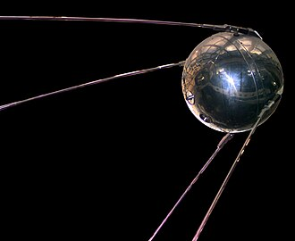
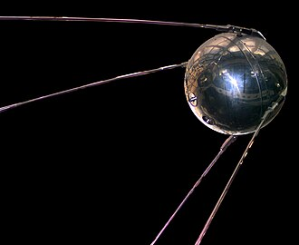

Lancement de Spoutnik 1
Le 4 octobre 1957, l'Union soviétique a lancé Spoutnik 1, le premier satellite artificiel de l'histoire. Cet événement a marqué le début de l'exploration spatiale.
Le 4 octobre 1957, l'Union soviétique a lancé Spoutnik 1, le premier satellite artificiel de l'histoire. Cet événement a marqué le début de l'exploration spatiale.
